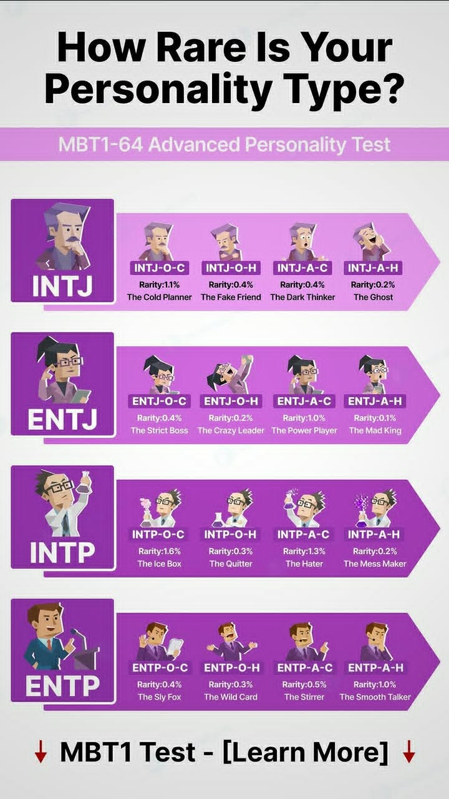
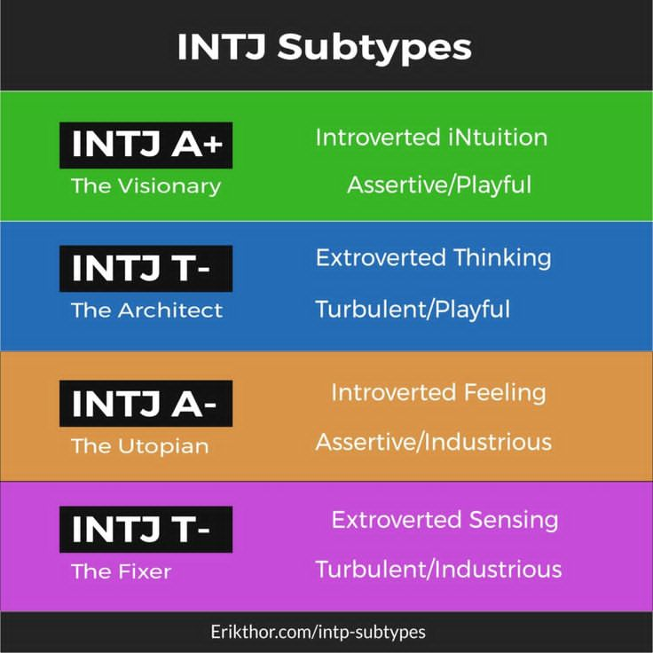
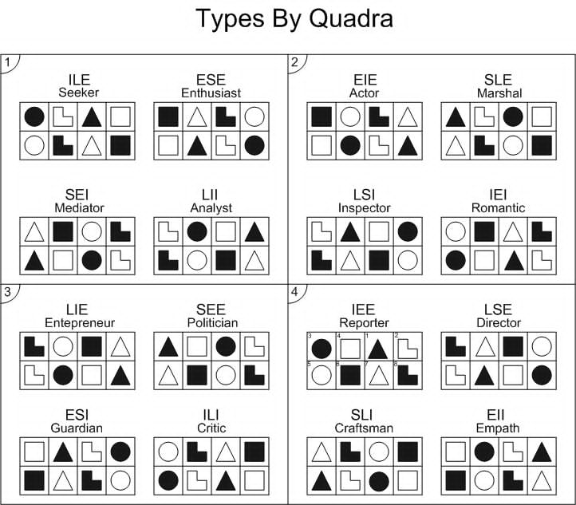
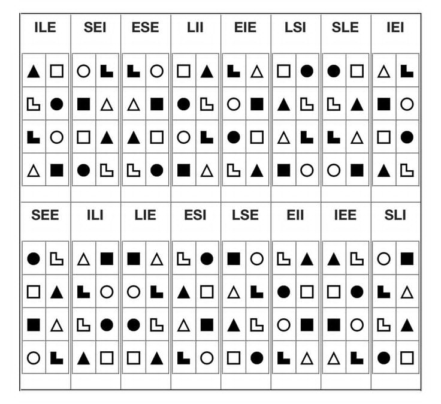
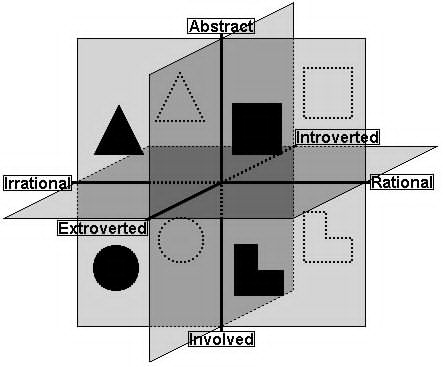
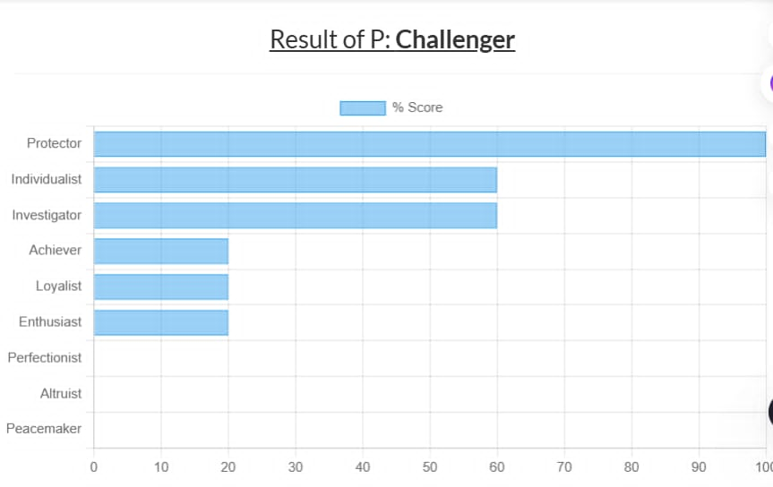
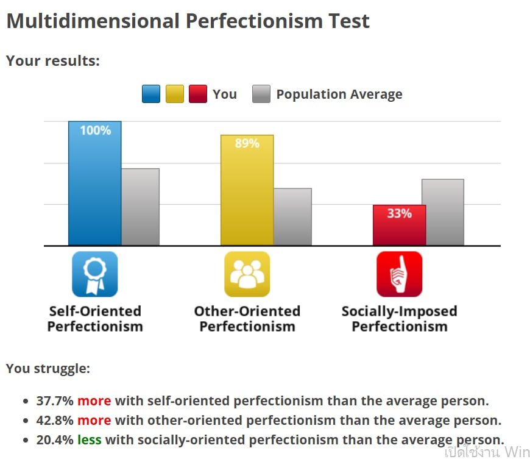
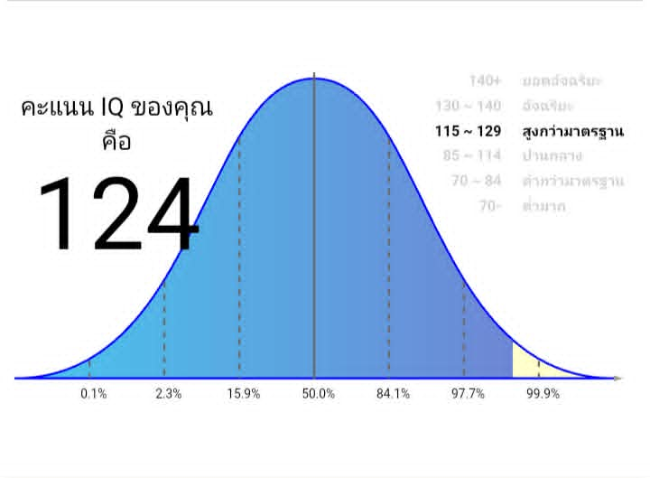

Developer & Writer
รวมผลเทสบุคลิกภาพทุกระบบที่ปลื้มเก็บสะสมไว้ มาวิเคราะห์ไขว้กันแบบละเอียด — ไม่ใช่แค่แปะป้าย แต่ดูว่าตัวเลขแต่ละชุด "เล่าเรื่องเดียวกัน" หรือ "ขัดกัน" ตรงไหนบ้าง
เรียงจากคะแนนรวมสูงสุดไปต่ำสุด (เต็ม 120 ต่อฟังก์ชัน) พร้อม positivity — ค่าที่บอกว่าฟังก์ชันนั้นถูกใช้แบบ "สบายใจ/เป็นตัวเอง" (บวก) หรือ "ใช้ได้แต่ไม่ชอบ/ฝืน" (ลบ)
Te (120, +12) คือฟังก์ชันที่แข็งแรงที่สุดและ "สบายใจ" ที่สุดในทุกฟังก์ชัน — ชอบระบบ ประสิทธิภาพ การตัดสินใจจากข้อมูล/ผลลัพธ์วัดได้ และพูดตรงไปตรงมา นี่คือ "ชั้นบริหาร" ที่คนรอบตัวเห็นชัดที่สุด
Ni (108, 0) ทำงานเงียบ ๆ อยู่เบื้องหลัง — เห็นภาพรวม/แพทเทิร์นระยะยาวได้เองโดยไม่ต้องพยายาม positivity ที่เป็น 0 สะท้อนว่ามันเป็นเหมือน "สัญชาตญาณที่ใช้อัตโนมัติ" มากกว่าตัวตนที่ตั้งใจแสดงออก
Ti (108, +4) ชอบความสมเหตุสมผลภายใน ชอบรื้อ/วิเคราะห์ว่าอะไรทำงานยังไงเพื่อความเข้าใจล้วน ๆ ไม่จำเป็นต้องมีเป้าหมายภายนอกแบบ Te ก็สนุกได้
Fi (108, +8, valuing สูงสุดในทุกฟังก์ชันคือ 32) คือระบบคุณค่า/จริยธรรมส่วนตัวที่ลึกและหนักแน่นมาก — แม้ Te จะเป็นฟังก์ชันที่ "เก่งที่สุด" แต่ Fi กลับเป็นสิ่งที่ "ให้คุณค่าที่สุด" นั่นแปลว่าลึก ๆ แล้วความถูกต้อง/ความจริงใจสำคัญกว่าความสำเร็จเสียอีก
Si (80, -4) และ Se (56, -8) คือฟังก์ชันด้านการรับรู้ที่อ่อนที่สุดสองตัว — active ของ Si เท่ากับ 0 แปลว่าไม่ได้ใช้ความคุ้นเคย/ธรรมเนียมเดิมเป็นตัวตั้งในชีวิตประจำวัน ส่วน Se ที่ negative มากสุดคือฟังก์ชันด้อย (inferior) แบบคลาสสิกของ INTJ — ไม่ถนัดการด้นสด/เสี่ยงตามอารมณ์ขณะนั้น ชอบวางแผนมากกว่า
Ne (64, -8) และ Fe (32, -4) คือจุดอ่อนสุดสองอันดับสุดท้าย — Ne ใช้แค่พอวิพากษ์/หาช่องโหว่ไอเดียคนอื่น มากกว่าจะสนุกกับความเป็นไปได้แบบไม่มีที่สิ้นสุด ส่วน Fe ที่คะแนนรวมต่ำสุดในทุกฟังก์ชัน (32) สะท้อนว่าการเล่นบทบาททางสังคม (small talk, ประนีประนอมเพื่อความกลมเกลียว) เป็นสิ่งที่ฝืนที่สุด และรู้สึก "ไม่จริงใจ" เวลาต้องทำ
โปรไฟล์นี้ "สะอาด" มากสำหรับคนที่ Te/Ti นำ: Conscientiousness สูงเกือบเต็ม (112) คู่กับ Agreeableness ต่ำมาก (32) คือลายเซ็นของคนที่มีวินัยสูง เด็ดขาด ไม่ประนีประนอมง่าย ๆ และกล้าขัดแย้งเพื่อความถูกต้อง Openness สูง (96) ให้พื้นที่กับ Ni/Ti ในการคิดเชิงนามธรรม Neuroticism ต่ำกว่าค่ากลาง (50) ทำให้ดูสงบนิ่งควบคุมอารมณ์ได้ดีแม้ในภาวะกดดัน
ส่วน Extraversion ที่สูงกว่าค่ากลางเล็กน้อย (81) อาจดูขัดกับภาพ "introvert" ของ INTJ ทั่วไป — แต่ Big Five วัด Extraversion แบบรวมหลายมิติ (assertiveness, sociability, energy) คนที่ Te แข็งแรงมักได้คะแนน assertiveness สูงจนดันค่ารวมขึ้น ทั้งที่ด้าน sociability/ชอบเข้าสังคมจริง ๆ อาจไม่ได้สูงตาม — นี่คือ "กล้าพูด/กล้านำ" ไม่ใช่ "ชอบปาร์ตี้"
ตัวหลัก 8 (Challenger) ชัดเจนไม่มีข้อกังขา (~95%) สอดคล้องกับ Te สูง + Agreeableness ต่ำ + DISC-C — ต้องการควบคุมสถานการณ์ตัวเอง เกลียดการถูกครอบงำ และพร้อมเผชิญหน้าเพื่อความยุติธรรม
ปีก 9 คือตัวลด "ความดิบ" ของเลข 8 ให้นิ่งขึ้น เก็บตัวขึ้น หลีกเลี่ยงดราม่าที่ไม่จำเป็น — ผสมกับ Neuroticism ต่ำ (50) แล้วออกมาเป็นภาพ "อำนาจแบบเงียบ ๆ" ไม่ใช่โผงผาง นี่คือส่วนที่ทำให้คนที่ Te แรงขนาดนี้ ยังคง "รู้สึก" เป็น introvert (INTJ) ในชีวิตจริง
INTJ + Enneagram 8 หายากจริง แต่ไม่ใช่คู่ที่เป็นไปไม่ได้: ในชุมชน typology INTJ ส่วนใหญ่ลงเอยที่เลข 5 (5w4/5w6), 1 (1w9/1w2) หรือ 3 (3w4/3w2) มากกว่า เพราะ Te ของ INTJ ทั่วไปมีสไตล์ "เป็นระบบ/มุ่งความสามารถ" ที่เข้ากับ core fear ของเลข 5 หรือมาตรฐานของเลข 1/3 พอดี — แต่ INTJ+8 ก็ถูกพูดถึงในฐานะคอมโบที่หายากแต่มีจริง และมีข้อสังเกตที่ตรงกับปลื้มมาก: เมื่อ INTJ จับคู่กับเลข 8 มักจะมาพร้อมปีก 9 (8w9) ส่วน 8w7 มักเป็นสัญญาณว่า จริง ๆ แล้วเป็น ENTJ ที่ typo ผิดว่าตัวเองเป็น INTJ มากกว่า — เหตุผลที่ปลื้มไม่ตรงกับ pattern INTJ ทั่วไป (5/1/3) จึงไม่ใช่ เรื่องแปลก แต่เป็นอีกหลักฐานที่ชี้ไปทางเดียวกับที่หัวข้อ 04-09 สรุปไว้ — Te ที่แรงผิดปกติของปลื้มดันให้ core fear เอียงไปทาง "กลัวถูกควบคุม/กลัวอ่อนแอ" (เลข 8) มากกว่า "กลัวไม่มีความสามารถ" (เลข 5) แบบ INTJ ทั่วไป
ส่วน tritype 853 ที่ปลื้มระบุ — จากผลแบบทดสอบล่าสุด อันดับรองจาก 8 จริง ๆ คือ 4 (Individualist) และ 5 (Investigator) เท่ากันที่ ~60% ส่วน 3 (Achiever) อยู่แค่ ~20% เท่ากับ 6 และ 7 หมายความว่าแกน "หัว" (5) ตรงกับ tritype แน่นอน แต่แกน "หัวใจ" อาจแกว่งระหว่าง 3 กับ 4 มากกว่าจะฟันธงที่ 3 เพียว ๆ — ทั้งสองแบบ (3 หรือ 4) ต่างก็ผลักดันมาตรฐานสูงกับตัวเองเหมือนกัน ต่างกันที่ 3 อิงความสำเร็จที่วัดผลได้ (เข้ากับ Te) ส่วน 4 อิงความเป็นตัวเอง/ความจริงใจ (เข้ากับ Fi ที่ valuing สูงสุด) — เป็นไปได้ว่าปลื้มมีทั้งสองด้านผสมกันจริง ๆ
ถ้ายึด tritype 853 ตามที่ระบุไว้ ชุมชน Enneagram เรียกคอมโบนี้ว่า "Solution Master" — 8 (body) + 5 (head) + 3 (heart) ถูกอธิบายว่าเป็นเลข 8 ที่ "นักวิชาการ/scholarly" ที่สุดในบรรดา 8 ทั้งหมด เก่งเรื่องเจาะปัญหาจนสุดทาง หาทางแก้ที่ทั้งสร้างสรรค์และใช้ได้จริงที่คนอื่นมองไม่เห็น มีความทะเยอทะยานสูง เน้นผลลัพธ์ที่วัดได้ และมักถูกมองว่า "อีโก้สูง/ใจร้อนกับความช้าหรือความอ่อนแอ" เป็นด้านมืดของทริปนี้ — ตรงกับภาพ Te-forward + Fi/perfectionism ที่ข้อมูลชุดอื่นชี้ไปทางเดียวกัน
มาตรฐานสูงของปลื้ม (self-oriented 100%, other-oriented 89%) มาจาก "ข้างใน" ล้วน ๆ ไม่ใช่เพราะกลัวสังคมตัดสิน (socially-imposed ต่ำกว่าค่าเฉลี่ยประชากรด้วยซ้ำ ที่ 33%) — ยืนยันภาพ Fi/Te/Ti นำ ไม่ใช่ Fe นำ
สรุปสั้น ๆ ก่อนอ่านต่อ: คำตอบสุดท้าย (หลังผ่าน 3 รอบการตรวจสอบ) คือ INTJ — Ni เป็นตัวขับหลัก โดยมี Te เป็นตัวเสริมที่แรงผิดปกติ ส่วนที่เหลือของหัวข้อ 04-09 คือ "ทางเดิน" กว่าจะไปถึงคำตอบนี้ — ข้อมูลดิบในรอบแรกชี้ไปได้ทั้ง สองทาง จึงต้องเช็คซ้ำถึง 3 รอบ (ข้อมูลดิบ → คำถามสมมุติ → พฤติกรรมชีวิตจริง) กว่าจะฟันธงได้ ไม่ใช่ว่าข้อสรุประหว่างทางผิดพลาด แต่คือน้ำหนักหลักฐานที่ค่อย ๆ ชัดขึ้นเรื่อย ๆ
มีหลายสูตรคำนวณจากข้อมูลฟังก์ชันดิบ ผลออกมาไม่ตรงกันทั้งหมด — และนั่นคือข้อมูลสำคัญในตัวมันเอง ไม่ใช่ความผิดพลาด
สังเกตว่า 3 สูตรที่อิง "การรับรู้ตัวเอง/พฤติกรรมที่เลือกใช้" (Grant/Brownsword, Purist's, Myers) ลงตัวที่ INTJ เป๊ะ ๆ แต่ 2 สูตรที่อิง "คะแนนดิบของฟังก์ชันที่แรงที่สุด" (Axis-based, Magician's) กลับได้ ENTJ — เหตุผลตรงไปตรงมา: ฟังก์ชันที่คะแนนสูงสุดในทุกฟังก์ชันคือ Te (120) ซึ่งเป็นฟังก์ชัน extraverted ถ้ายึดตามทฤษฎีที่ว่า "ฟังก์ชันเด่นสุดกำหนดทิศ E/I" ก็จะออกมาเป็น ENTJ (Te นำ, Ni เสริม) แทนที่จะเป็น INTJ (Ni นำ, Te เสริม)
เทียบกับสเกล 16Personalities (Assertive/Turbulent): ด้วยสถานะ T- (Turbulent) ที่ปลื้มระบุเอง บวกกับ Te ที่แสดงออกแรงมาก subtype ที่ตรงที่สุดคือ INTJ-T "The Architect" — กลุ่มที่ขับเคลื่อนด้วย Extraverted Thinking ชัดเจน ไม่ใช่กลุ่ม Ni-visionary แบบฝันลอย ๆ (INTJ-A "Visionary")
ข้อมูลจาก 16Personalities เองระบุว่า Turbulent Architect ไม่ได้แปลว่าอ่อนแอกว่า Assertive — แค่ประมวลผลความกดดันคนละแบบ: Turbulent มักเก็บความกังวลไปแปลงเป็นการเตรียมตัว/มาตรฐานที่สูงขึ้นเรื่อย ๆ (สอดคล้องกับ self-oriented perfectionism 100% ข้างต้น) ขณะที่ Assertive จะสงบนิ่งและตัดสินใจเร็วกว่าโดยไม่ทบทวนซ้ำมากเท่า — ตัวเลขที่มักถูกอ้างถึงคือ Turbulent Architect ราว 49% รายงานว่ากลัวการตัดสินใจผิดพลาด เทียบกับ Assertive ที่ราว 18% ซึ่งเข้ากับภาพ "มาตรฐานสูงจากข้างในตัวเอง" ที่เห็นจากผลแบบทดสอบ Perfectionism มาก่อนแล้ว
ส่วนแบบทดสอบ "MBTI-64" (INTJ-O-C / O-H / A-C / A-H) ที่แนบมาเป็นคอนเทนต์เชิงบันเทิง/โฆษณาที่ไม่มีระเบียบวิธีเปิดเผยชัดเจน ต่างจาก Big Five และ cognitive-function test ที่มีมาตรฐานทางจิตวิทยารองรับ — ถ้าจะเดาโดยอิงแค่แกน Turbulent (O) ที่ตรงกับปลื้ม กลุ่มที่ใกล้เคียงสุดคือ "INTJ-O-C" แต่ควรมองเป็นเกร็ดสนุก มากกว่าใช้ฟันธงจริงจัง
→ ตอนต่อไป (รอบ 2) อยู่ในหัวข้อ 08 ท้ายหน้านี้: ทดสอบข้อสรุปชั่วคราวนี้ด้วยคำถามพฤติกรรมสมมุติ 7 ข้อ
สอดคล้องกันชัดเจน: Te สูงสุด + Agreeableness ต่ำสุด (32) + DISC-C (Analyst, 45.65%) + Enneagram 8 (~95%) ทั้งสี่ระบบชี้ไปทางเดียวกันคือ "ตัดสินใจเร็ว มีเหตุผล ไม่ประนีประนอมง่าย ต้องการควบคุมสถานการณ์" — นี่คือแกนที่แน่นที่สุดในโปรไฟล์ทั้งหมด
Socionics LIE vs MBTI INTJ — ยังเป็นคำถามเปิดอยู่ ณ จุดนี้ของการวิเคราะห์: LIE (Te นำ, Ni เสริม) จับ "ศักยภาพ/ความถนัดดิบ" ได้แม่นกว่า ส่วน INTJ (Ni นำ, Te เสริม) จับ "พฤติกรรมที่เลือกใช้ในชีวิตประจำวัน" ได้แม่นกว่า — ปีก 9 (จาก 8w9) อาจเป็นตัวแปรที่ทำให้เครื่องยนต์แบบ ENTJ/LIE ถูกห่อด้วยเปลือกนอกแบบ INTJ ที่สงบ เก็บตัว ไม่โอ้อวด (คำตอบสุดท้ายว่า Te หรือ Ni ตัวไหนคือตัวขับหลักจริง อยู่ในหัวข้อ 09 ท้ายหน้านี้ หลังผ่านการเช็คด้วยพฤติกรรมจริง)
LIE สังกัด Gamma quadra ร่วมกับ Politician (SEE), Critic (ILI), Guardian (ESI) — ควอดร้านี้ให้คุณค่ากับ Se (ลงมือ/ผลักดันจริง), Ni (มองกลยุทธ์ระยะยาว), Te (ประสิทธิภาพ/ผลลัพธ์วัดได้) และ Fi (ความภักดี/คุณค่าส่วนตัวที่ลึก) พร้อมกัน — เชื่อผลลัพธ์มากกว่าคำพูดสวยหรู กล้าเดินตามผลประโยชน์ตัวเอง และให้ความไว้ใจแบบเต็มที่กับคนไม่กี่คนที่พิสูจน์ตัวแล้วเท่านั้น ตรงกับภาพ Fi-valuing สูงสุด + Te แข็งแรงที่สุด ที่เห็นจากคะแนนฟังก์ชันด้านบน แต่ Se กลับเป็นจุดที่ทฤษฎีกับข้อมูลจริงขัดกัน (ดูหมายเหตุถัดไป)
Fi > Fe คือกุญแจของ "EQ": Fi คือฟังก์ชันที่ปลื้ม valuing สูงสุด (32, สูงสุดในทุกฟังก์ชัน) ในขณะที่ Fe ต่ำสุดและติดลบ (32 รวม, -4) EQ ที่รายงานไว้สูงมาก (155) จึงน่าจะเป็น "EQ เชิงตระหนักรู้ตัวเอง/ยึดคุณค่าภายใน" มากกว่า "EQ เชิงสังคม/ความอบอุ่นแบบเข้ากับคนง่าย" — วิเคราะห์คนอื่นได้แม่นด้วยหัว (Te/Ti) ไม่ใช่ด้วยการเออออห่วงใยแบบ Fe
IQ 124-130 (อยู่ใน top ~5%) ก็สอดคล้องกับ aptitudinal score ที่แตะเพดานสูงสุดพร้อมกันถึง 4 ฟังก์ชัน (Ni, Te, Ti, Si ต่างอยู่ที่ 32 เท่ากัน) แปลว่าความสามารถทางปัญญาดิบกว้างและสูง แม้จะเลือก "ใช้จริง" แค่บางฟังก์ชันเป็นหลักก็ตาม
จุดที่ระบบขัดกันเอง (ตรงไปตรงมา ไม่กลบเกลื่อน): ทฤษฎี Socionics ระบุว่า Gamma quadra (ที่ LIE สังกัด) ควรจะ "valuing" ฟังก์ชัน Se ร่วมกับ Ni/Fi/Te — แต่ในทางปฏิบัติ Se ของปลื้มกลับอ่อนแอที่สุดและติดลบมากที่สุด (-8) ตัวนี้คือจุดที่ทฤษฎีกับข้อมูลจริงไม่ตรงกัน 100% ซึ่งเป็นเรื่องปกติ — โมเดลบุคลิกภาพไม่มีระบบไหนสมบูรณ์แบบ 100% กับคนจริง ๆ สักคน
ราศี (Leo Sun / Scorpio Rising) เป็นมุมสัญลักษณ์ล้วน ๆ ไม่มีหลักฐานวิทยาศาสตร์รองรับ แต่ถ้ามองแบบขำ ๆ — Leo ต้องการความเป็นเลิศที่ถูกมองเห็น (ใกล้เคียงแรงขับของเลข 3/8) ส่วน Scorpio Rising คือเปลือกนอกที่ระวังตัว เข้มข้น อ่านยาก (ใกล้เคียงกับ Ni + Fi ที่เก็บอยู่ข้างในไม่แสดงออกง่าย ๆ) — เข้ากันได้ในเชิง "ภาพลักษณ์" แต่ควรอ่านไว้เป็นความบันเทิง
ส่วนพฤติกรรมมือแบบประสาน (cross-dominant) เป็นข้อสังเกตทางประสาทวิทยาที่น่าสนใจ แต่ยังไม่มีงานวิจัยที่เชื่อมโยงกับบุคลิกภาพ อย่างหนักแน่นพอ — ใส่ไว้เป็นข้อมูลเสริม ไม่ใช่หลักฐานยืนยันประเภทบุคลิกภาพ
หมายเหตุ: ผลเทสบุคลิกภาพทุกชนิด (MBTI, Enneagram, Socionics, DISC, IQ/EQ) เป็นเครื่องมือช่วยสะท้อนตัวเอง ไม่ใช่การวินิจฉัยทางคลินิก ความแม่นยำขึ้นกับความซื่อสัตย์ตอนตอบและคุณภาพของแบบทดสอบแต่ละชุด
คลิกที่ภาพเพื่อดูขนาดเต็ม — ทุกภาพเก็บไว้ที่โฟลเดอร์ "จิตวิทยา" ที่ปลื้มอัปโหลดเอง

MBTI-64 Advanced Personality Test (rarity chart, แหล่งที่มาไม่ระบุชัด)
INTJ Subtypes (A+/T-/A-/T-) — Erikthor.com/intp-subtypes
Socionics: Types by Quadra
Socionics: ตารางฟังก์ชัน 16 ประเภท
Socionics Model (Abstract/Involved/Extraverted/Introverted)
Enneagram — "Result of P: Challenger"
Multidimensional Perfectionism Test
IQ Test — คะแนน 124 (สูงกว่ามาตรฐาน)หลังรวบรวมผลเทสทั้งหมดแล้ว ไปสืบเพิ่มว่างานวิจัยทางจิตวิทยากระแสหลักมองแต่ละระบบยังไง — เพราะไม่ใช่ทุกระบบมีน้ำหนักหลักฐานเท่ากัน การรู้ว่าอันไหน "หนักแน่น" อันไหน "เอาไว้สนุก" ช่วยให้อ่านผลข้างบนได้อย่างมีวิจารณญาณมากขึ้น
Big Five ถูกพัฒนาจากการวิเคราะห์ปัจจัย (factor analysis) ของคำที่คนใช้บรรยายตัวเองนับพันคำ ซ้ำแล้วซ้ำเล่าข้ามวัฒนธรรม และเป็นระบบเดียวที่พบว่าทำนายผลลัพธ์ภายนอกได้จริง เช่น performance ในงาน ความสำเร็จทางวิชาการ ไม่ใช่แค่การประเมินตัวเอง — นักจิตวิทยาวิชาการส่วนใหญ่แนะนำให้ใช้ Big Five เป็นมาตรฐานอ้างอิงหลัก
MBTI แม้ได้รับความนิยมสูงมากในโลกธุรกิจ/พัฒนาตัวเอง แต่มีปัญหาเรื่อง test-retest reliability ค่อนข้างหนัก — งานวิจัยหลายชิ้นพบว่า 39–76% ของคนได้ผลลัพธ์ (type) เปลี่ยนไปเมื่อทำซ้ำภายในเวลาแค่ไม่กี่สัปดาห์ และไม่พบว่าทำนาย job performance ได้อย่างมีนัยสำคัญ ชุมชนวิชาการกระแสหลักจึงไม่ค่อยใช้ MBTI ในงานวิจัยจริงจัง แม้จะยังมีคนปกป้องคุณค่าเชิงการ สื่อสาร/ทำความเข้าใจตัวเองของมันอยู่ก็ตาม
DISC และ Enneagram มีจุดร่วมคล้ายกันคือได้รับความนิยมในบริบทองค์กร/โค้ชชิ่งสูงมาก แต่ขาดงานวิจัยแบบ peer-reviewed, meta-analysis หรือมาตรฐานการให้คะแนนที่เป็นหนึ่งเดียว — Enneagram มีจุดตั้งต้นจากประเพณี จิตวิญญาณ/ลึกลับ ไม่ได้มาจากการวิเคราะห์ข้อมูลเชิงสถิติแบบ Big Five ส่วน DISC พบว่ามี predictive validity ต่ำเมื่อใช้ทำนายผลงานจริงในที่ทำงาน
Socionics ในทางวิชาการจิตวิทยา/สังคมวิทยาถูกจัดเป็น pseudoscientific theory — แม้จะแตกหน่อมาจากงานของ Carl Jung เหมือน MBTI แต่พัฒนาแยกทางกันโดยสิ้นเชิงในโซเวียตลิทัวเนียช่วงทศวรรษ 1970s (Aušra Augustinavičiūtė) และเพิ่งเป็นที่รู้จัก นอกยุโรปตะวันออกผ่านอินเทอร์เน็ต งานเทียบผลระหว่าง MBTI กับ Socionics พบว่าตรงกันแค่ราว 30% ของกรณีเท่านั้น — สอดคล้องกับที่ปลื้มได้ ผลเทส LIE (Socionics) แต่วิเคราะห์พฤติกรรมจริงแล้วออกมาใกล้ INTJ (MBTI) มากกว่า ตามที่สรุปไว้ในหัวข้อ 09 ท้ายหน้านี้
สรุปเชิงปฏิบัติ: ไม่ได้แปลว่า MBTI/Enneagram/DISC/Socionics "ใช้ไม่ได้เลย" — แค่ควรอ่านเป็นเครื่องมือช่วยสะท้อนตัวเอง/จุดเริ่มบทสนทนา ไม่ใช่ข้อเท็จจริงเชิงวิทยาศาสตร์ที่แน่นอนแบบ Big Five ยิ่งระบบไหนหลายชุดข้อมูลชี้ไปทางเดียวกัน (เช่น Te สูง + Agreeableness ต่ำ + Enneagram 8 + DISC-C ในหัวข้อ 05) ยิ่งน่าเชื่อถือ เพราะเป็น "รูปแบบที่เกิดซ้ำ" ไม่ใช่ผลของระบบใดระบบหนึ่งเพียงลำพัง
ปัญหาของรอบ 1 (หัวข้อ 04) คือคะแนนฟังก์ชันดิบเพียงอย่างเดียวตัดสินไม่ได้ว่า Te หรือ Ni ตัวไหนเป็น "ตัวขับหลัก" จริง — LIE และ ILI ใน Socionics ใช้ฟังก์ชันคู่เดียวกันคือ Te-Ni แค่สลับตำแหน่งหลัก/รอง รอบนี้เลยลองถามพฤติกรรมจริงตรง ๆ แทนที่จะเดาจากตัวเลขอย่างเดียว
ข้อ 1 และ 5 คือตัวชี้ขาด: ใจที่ลอยไปเองตอนว่าง ๆ (ไม่มีอะไรบังคับ) ไปทาง "จัดระบบ/เพิ่มประสิทธิภาพ" (Te) ไม่ใช่ทางแพทเทิร์น/ความหมายซ่อนแบบ Ni — และที่สำคัญกว่านั้น การนั่งคิดคนเดียวแบบ Ni ถูกระบุว่าเป็น "โหมดพักผ่อน/ชาร์จพลัง" ไม่ใช่โหมดที่ใช้งานจริงตอนลงมือทำ ฟังก์ชันหลัก (dominant) ตามทฤษฎีคือสิ่งที่ "รันอยู่เบื้องหลังตลอดเวลาแม้ตอนลงมือจริง" ส่วนฟังก์ชันเสริมมักเป็น "พื้นที่พักที่ทำให้สมดุล" — พอ Ni กลายเป็นสิ่งที่ใช้พักจาก Te ที่ทำงานหนักตลอด นี่คือรูปแบบคลาสสิกของ Te-dominant / Ni-auxiliary (ENTJ/LIE) ไม่ใช่กลับกัน
ข้อ 2, 4, 6 สนับสนุนไปทางเดียวกัน — ต้องการโครงสร้าง/ข้อมูลก่อนถึงจะสบายใจในความกำกวม, ปรับกลยุทธ์เร็วเมื่อได้ข้อมูลใหม่, เคารพและต่อยอดระบบที่ใช้งานได้จริง ล้วนเป็นพฤติกรรมของคนที่ให้ Te ตัดสินใจหลักในโลกภายนอกจริง ๆ
ข้อ 3 ("รู้คำตอบก่อนแล้วค่อยหาเหตุผลมาอธิบายทีหลัง") ไม่ได้ขัดกับสรุปนี้ — เป็นรูปแบบคลาสสิกของคนที่มี Ni เป็นตัวเสริมของ Te พอดี: Ni-aux โยน insight มาแวบหนึ่ง แล้ว Te ก็รีบเอาไปสร้างเป็นแผน/เหตุผลที่พูดออกมา ด้วยความมั่นใจเหมือนมันมาจากตรรกะล้วน ๆ ตั้งแต่แรก — ข้อนี้เลยไม่ใช่หลักฐานว่า Ni เป็นตัวหลัก ส่วนข้อ 7 ยืนยันว่า tritype เป็น 853 ตามที่ระบุไว้เดิมจริง (heart fix เป็น 3/Achiever ไม่ใช่ 4)
หมายเหตุ: บทสัมภาษณ์นี้เป็นการรายงานตัวเอง (self-report) ไม่ใช่การประเมินทางคลินิก และพฤติกรรมคนเราปรับเปลี่ยนได้ตามบริบท/ ช่วงชีวิต — ข้อสรุปนี้คือการอ่านหลักฐานที่มีในรอบนี้ให้ดีที่สุดเท่าที่ทำได้ ไม่ใช่คำตัดสินตายตัว
→ ตอนต่อไป (รอบ 3 — คำตอบสุดท้าย) อยู่ในหัวข้อ 09 ท้ายหน้านี้
รอบ 2 (หัวข้อ 08) ใช้คำถามสมมุติ (hypothetical) ซึ่งเป็นสัญญาณที่พอใช้ได้แต่ไม่หนักแน่นเท่าพฤติกรรมชีวิตจริงที่เกิดซ้ำ — รอบนี้ถามเจาะเหตุการณ์จริง 3 เรื่อง (แพทเทิร์นในความสัมพันธ์, การดูแลตัวเอง, ระดับความสันโดษ) แล้วผลพลิกกลับไปทาง Ni-dominant อีกครั้ง — และนี่คือคำตอบสุดท้ายของคดีนี้
1. ความสันโดษแบบเบ็ดเสร็จ — แก้ไข: จุดนี้เป็นหลักฐานที่ "เป็นกลาง" ไม่ได้เอียงไปทาง Ni ตามที่เคยเขียนไว้ — เดิมข้อนี้เคยถูกใช้เป็นหลักฐานว่า Ni เป็นตัวหลัก แต่หลังตรวจสอบเพิ่ม พบว่าเป็นการตีความผิด: cognitive extraversion (ทิศทางของ ฟังก์ชันหลัก) ไม่ใช่สิ่งเดียวกับ sociability (ชอบเข้าสังคม) — Te ที่เป็น extraverted function ต้องการ "the object" คือความจริง ภายนอกที่วัดผลได้ แต่ไม่จำเป็นต้องเป็น "คน" เลย โปรเจค/เป้าหมาย/ระบบที่จัดการคนเดียวก็นับเป็น "the object" ของ Te ได้เต็มรูปแบบ — คนที่ Te นำจริงจึงอยู่คนเดียวได้สบายเหมือนกัน ตราบใดที่ยังมีเป้าหมาย/โปรเจคให้จัดการอยู่ ข้อนี้จึงตัดออกจากการเป็นหลักฐาน
2. ให้ความสำคัญกับการดูแลตัวเอง/พักผ่อนค่อนข้างน้อย — ถ้า Se เป็นฟังก์ชันตัวที่ 3 แบบ ENTJ มักยังมีการดูแล/ สนุกกับร่างกายอยู่บ้าง แต่การละเลยร่างกายไปมากขนาดนี้ตรงกับ Se ที่เป็นฟังก์ชันด้อยที่สุด (inferior) ของ INTJ พอดี
3. อารมณ์พลุ่งพล่านเฉพาะจุดเดียว ที่ "รู้จักตัวเองว่าเป็นแบบนี้" — ในบางสถานการณ์ (โดยเฉพาะเมื่อรู้สึกถูกมองข้าม/ ไม่ได้รับความสำคัญ) อารมณ์จะพลุ่งพล่านขึ้นแรงผิดจากนิสัยที่ใช้เหตุผล/ควบคุมตัวเองได้ดีตามปกติ — ความถี่และการรู้ตัวคือตัวชี้ขาด: ฟังก์ชันตัวที่ 3 (tertiary, Fi ของ INTJ) มีธรรมชาติแบบ "เด็กใน" (puer) — หวงแหนคุณค่าลึก ใจร้อน/หักไม่งอเฉพาะจุดที่โดนแตะ แต่เป็นแพทเทิร์นที่รู้จักตัวเองดี ต่างจากฟังก์ชันด้อย (inferior, Fi ของ ENTJ) ที่ปกติรู้สึกแปลกแยกจากตัวเองและเกิดยากมาก เฉพาะวิกฤตหนักเท่านั้น — สิ่งที่ปลื้มเล่ามาตรงกับแบบแรก
ส่วนข้อ 1 ของหัวข้อ 08 (ใจลอยตอนว่างไปทาง Te) ไม่ได้ขัดกับข้อสรุปนี้ — Ni มักประมวลผลแบบไม่เป็นคำพูด (non-verbal) จึงมักไม่ถูก รายงานว่าเป็น "สิ่งที่กำลังคิด" แม้จะเป็นฟังก์ชันหลักจริง ในขณะที่ Te ให้ผลลัพธ์เป็นคำพูด/แผนที่จับต้องได้ง่ายกว่ามาก
หมายเหตุ: การพลิกข้อสรุปสองรอบ (04 → 08 → 09) ไม่ใช่ความผิดพลาด แต่คือกระบวนการ — คำถามสมมุติให้สัญญาณอ่อนกว่าพฤติกรรม ชีวิตจริงที่เกิดซ้ำเสมอ ยิ่งข้อมูลเจาะจงและเป็นเหตุการณ์จริงมากเท่าไหร่ ยิ่งเชื่อถือได้มากกว่าคำตอบต่อคำถาม "ถ้าเจอสถานการณ์นี้จะทำไง"
→ หลังหัวข้อนี้ตีพิมพ์ ยังมีรอบทบทวนที่ 4 อีกครั้ง เพราะพบข้อผิดพลาดเชิงวิธีวิจัยในหลักฐานข้อ 1 ด้านบน — รายละเอียดและคำตอบ ที่แม่นที่สุดจริง ๆ อยู่ในหัวข้อ 10 ท้ายหน้านี้
หลักฐานข้อ 1 ในหัวข้อ 09 ("ความสันโดษแบบเบ็ดเสร็จ") ที่เคยใช้สนับสนุน Ni-dominant นั้น จริง ๆ แล้ว เป็นการตีความผิดตั้งแต่ต้น — ต้นเหตุคือความสับสนที่พบได้บ่อยมากแม้แต่ในแอป MBTI ที่นิยมที่สุด (16Personalities ซึ่งถูกวิจารณ์ว่าเป็น "Big Five ที่แต่งตัวเป็น MBTI" ไม่ได้ใช้ cognitive function theory จริง): คนมักเข้าใจว่า "extraverted function" แปลว่า "ต้องการอยู่กับคน/เข้าสังคม" แต่ในทฤษฎี Jung ดั้งเดิม cognitive extraversion ไม่ใช่สิ่งเดียวกับ sociability — ฟังก์ชัน extraverted (รวมถึง Te) ต้องการแค่ "the object" คือความจริงภายนอกที่ วัดผลได้ ซึ่งเป็นได้ทั้งคนหรือแค่โปรเจค/เป้าหมาย/ระบบที่จัดการคนเดียวก็พอ คนที่ Te นำจริงจึงอยู่คนเดียวได้สบายเหมือนกัน ตราบใดที่ยังมีเป้าหมายให้จัดการอยู่ — นักวิจัยหลายคนถึงกับระบุว่า "extraverted type จำนวนมากเข้าใจผิดว่าตัวเองเป็น introvert เพราะพวกเขาไม่ใช่คนที่ต้องการอยู่กับคน" พอดี
ผลคือ หลักฐาน "ความสันโดษ" ต้องถูกตัดออกจากการเป็นหลักฐานทั้งสองฝั่ง — ไม่สนับสนุน Ni และไม่สนับสนุน Te เพราะมันวัดคนละแกนกับคำถามที่ต้องการตอบ (E/I ของฟังก์ชันหลัก vs. ชอบเข้าสังคมหรือไม่) นี่คือเหตุผลที่คำถามพฤติกรรมเชิงสังคม/ ความเป็นผู้นำทั้งหมดที่ถามไปก่อนหน้านี้ (ทั้งรอบ 2 และรอบ 3 บางข้อ) มีน้ำหนักน้อยกว่าที่เคยให้ไว้
เมื่อตัดหลักฐานที่วัดผิดแกนออก สิ่งที่เหลืออยู่และไม่เคยเปลี่ยนทิศเลยตลอดกระบวนการทั้งหมดคือ ตัวเลขดิบจากคะแนน cognitive function test ในหัวข้อ 01 — นี่คือหลักฐานกลุ่มเดียวที่ไม่ผ่านการตีความพฤติกรรม/self-report เลย:
สแต็กของ ENTJ คือ Te-Ni-Se-Fi (Se ต้องแข็งกว่า Fi) ส่วนสแต็กของ INTJ คือ Ni-Te-Fi-Se (Fi ต้องแข็งกว่า Se) — ตัวเลขจริงของปลื้มคือ Fi แข็งกว่า Se อย่างชัดเจน ตรงกับสแต็ก INTJ ไม่ใช่ ENTJ และตัวเลขชุดนี้ไม่เคย เปลี่ยนทิศเลยไม่ว่าคำถามพฤติกรรมรอบไหนจะตอบว่าอะไร — จึงเป็นหลักที่ยึดได้มั่นคงที่สุดในบรรดาหลักฐานทั้งหมด
หมายเหตุปิดท้าย: ผลเทสบุคลิกภาพทุกระบบเป็นเครื่องมือช่วยสะท้อนตัวเอง ไม่ใช่กรอบที่ต้องยึดติดหรือใช้จำกัดว่า "ต้องเป็นแบบนี้เท่านั้น" — ข้อมูลชุดนี้มีหลักฐานรองรับจริง แต่การรู้จักตัวเองเป็นกระบวนการที่ดำเนินไปตลอดชีวิต ไม่ใช่ป้ายที่ติดแล้วจบ หน้าเว็บนี้จึงเป็นภาพสะท้อน ณ จุดหนึ่งของการเรียนรู้ตัวเอง มากกว่าคำตัดสินตายตัว